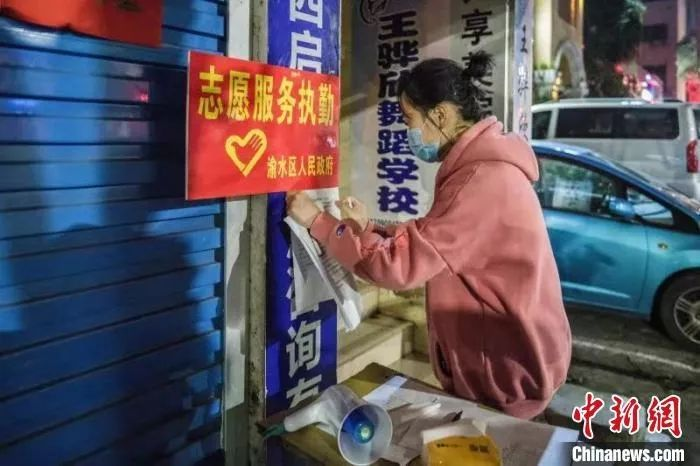

口述实录 | 为什么我要当志愿者接送病人和医生？
原文链接 备份链接 防护和消毒还是很重视的，每送一次，全车消毒一次。 口 述 | 尹 达 整 理 | 黄 祺 我叫尹达，现在是武汉龙安社区的一名志愿者司机。 我的工作是保险销售，疫情发生之前，我一般每天一早去公司，然后出门拜访客户。如果去 …
口述者 新余市渝水区委常委、宣传部部长何智勇
整理：胡光华 张青青
我和文峰、陈山两位同志经过再三考虑，决定顶住压力，从2月3日晚上9点开始对绿景水岸小区实行全封闭式管理。春龙社区绿景水岸小区是新余市疑似“超级传播者”黄某某居住的小区，此前与其接触的13名医护人员均被感染。
新冠肺炎是一种教科书上未写、现实中从未见过的新型传染病，刚开始大家对该病的毒性、传染性、危险性认识还不是很足，有点懵懵懂懂、不以为然，又恰逢中华民族的传统佳节——春节，人们想走亲戚的就走亲戚，想串门的就串门，没有把它当回事。

江西新余市渝水区某小区的志愿者服务点。 中新网 图
根据江西新余市委市政府的统一部署要求，1月31日晚上，渝水区委召开四套班子新冠肺炎疫情联防联控工作专题会议，针对当前的严峻形势决定对所有小区实行半隔离管理，并对区四套班子领导作了一个责任分工，每个区领导挂点包片一个社区。
我牵头挂点包片春龙社区13个小区的疫情防控工作。
2月2日晚上，我们率全市之先，第一个在小区成立了临时党支部，由我担任临时党支部书记，回归党员、市委巡察办主任刘文峰、市委人才办主任陈山、区教体局党委副书记（副局长）肖满珠担任副书记，区委宣传部、区教体局党员干部和春龙社区主任、工作人员作为支部成员，临时党支部对小区防控工作总调度、总协调。
实行全封闭式管理后，临时党支部支部重新排班，24小时在小区门口值守。为保障居民封闭期间的日常生活物资供应，2月3日开始，支部安排5名党员志愿者、回归教师每天8时30分，到超市帮居民采购新鲜蔬菜、水果、米、面、油以及各种生活用品，送到20栋楼下，再由物业工作人员逐户送到门口。
刚开始实行全封闭管理的时候，有些居民不理解，时不时有小矛盾、小纠纷、小摩擦发生，甚至还有冲卡、谩骂的。但考虑到这样做是为小区居民好，为这座城市好，党员志愿者们也就一忍再忍，愿继续当好“守门神、护航员”。
在全市第一个实行全封闭式管理
2月1日一大早开始，我带领包片帮扶单位区委宣传部、区教体局、区融媒体中心和春龙社区主要负责同志，对13个小区徒步开展调研摸底，了解各个小区疫情防控情况。
中午1点多钟，我们在社区召开碰头会，把春龙社区疫情防控有关情况进行了分析比较，对3个包片帮扶单位的54名干部进行了具体的分工，分片分小区包干，每个小区指令1名科级干部担任组长，明确各自的任务和职责。
绿景水岸小区现有入住居民1300余户共4500余人。小区实行半隔离后，2月2日至3日，我们一直在小区门口密切观察值守：虽然实行了半隔离，但进出车辆跟往常一样车水马龙，人员进出也像逛超市一样，居民总有各种理由进进出出，有些居民压根不把疫情当回事。这样下去肯定不行。
我和文峰、陈山两位同志经过再三考虑，决定顶住压力，从2月3日晚上9点开始对小区实行全封闭式管理，车子只允许出不准进，出去了的车子就只能停在外面，有疫情防控任务和工作需要的居民必须凭单位证明和身份证出入，其他居民则按出入证每户每两天安排一人出去采购生活必需物资，进出小区的居民都必须进行体温检测登记。
很快，车流量就大大减少。2月6日晚上，临时党支部几位同志商量干脆“一刀切”，禁止一切车辆进出。非常时期采取非常手段非常措施严管严控，我们认为方向应该不会错，也是对上级党组织负责，对居民群众负责。
实行全封闭式管理后，临时党支部支部重新排班，确保24小时都有人在小区门口值守。2月3日晚上开始，我带头每天坚持值守晚上8点至12点的晚班。刚开始实行全封闭管理的时候，有些居民不理解，党员志愿者们苦口婆心解释劝导，还是时不时有小矛盾、小纠纷、小摩擦发生，甚至还有冲卡、谩骂的。有的说，“别的小区都没这么严，你们凭什么管这么紧。”有的说，“我要去菜地里拔点菜，吃点新鲜的。”有的说，“我每天都要去北湖公园散步，这是多年的老习惯。”……但考虑到这样做是为小区居民好，为这座城市好，党员志愿者们也就一忍再忍、忍气吞声，继续充当守门神、护航员。
对疑似“超级传播者”居住楼栋隐患再排查
绿景水岸小区20栋是新余市疑似“超级传播者”黄某某居住的楼栋，该栋共有居民42户163人。根据上级部署，1月29日对该楼栋实行了全封闭式管理。2月2日下午，市里主要领导来到小区暗访，发现小区20栋居民居家隔离还存在管理漏洞，虽然楼栋进出大门锁住了，但居民可以乘坐电梯从地下车库进出。
得知这一情况后，临时党支部会同社区主任、物业经理第一时间处理，本想找个电焊工把地下车库的门封死，但时值春节，又听说是“超级传播者”居住的楼栋，找了几个师傅都不敢来不愿来，最后还是找到经常帮区委宣传部维修的何师傅，才送来了一把大锁，把地下车库的通道完全锁死。
2月3日晚上10点多钟，收到市里主要领导批示的舆情快报，说有网民反映20栋1702住户是在湖北做生意的，有一辆湖北牌照的车子停在楼下，存在疫情安全隐患。
获知这一情况后，在市政府何副市长调度指挥下，我带领支部的同志迅速协调街道、社区干部、物业经理、公安民警组成调查小组，于2月4日上午对1702室业主的基本情况进行了上门摸底。
根据交警部门提供的信息和上门了解到的情况得悉，1702室一家三口都在新余工作，2019年购买了一辆湖北牌照的车，一直在新余行驶，从没去过湖北，更没去过武汉。虽然几经折腾，但大家悬着的一颗心也总算放下了。
为做好20栋42户居民的隔离管理，2月4日开始，6名志愿者值守在20栋楼下，每5个小时轮一个班，防止极个别不自觉的居民趁物业人员开门运送物资、收集垃圾时溜出楼栋，杜绝任何病毒传播隐患。
全封闭管理后，小区居民的车子出来了不能进都停在外面，刚开始有点乱停乱放，横七竖八地挤在小区大门口、周边人行道上，连小区消防通道都堵住了。
看到这一现象，我打电话请求市交警支队袁支队长支持，2月4日上午，支队安排交警对小区门口车辆进行了清场整顿，冒雨在小区门口安装了4个护栏，防止车子乱停乱放，保障了小区消防通道的畅通，并从4日下午开始，支队专门派了两名交警蹲在绿景水岸小区门口值守。
经过一个星期的严管严控，我们慢慢稳住了阵脚，小区车流、人流明显下降，不管是居民出入体温监测登记，还是外面车子停放，都变得井然有序。
针对20栋42户163名全隔离居民，临时党支部用心用情保障他们的日常生活物资供应。2月3日开始，支部安排5名党员志愿者、回归教师每天8时30分，到超市帮他们采购新鲜蔬菜、水果、米、面、油以及各种生活用品，送到20栋楼下，再由物业工作人员逐户送到门口。
这支红马甲“菜篮子”小分队，每天一大早拿着从物业处打印好的20栋居民在微信群里接龙的购物订单，多则十七八户，少则五六户，赶到超市里对着单子一样一样选购，一户一户分袋装好，一户一户垫钱买单，一遍一遍对照订单清点物资，生怕少买忘买点什么，每天都要在熙熙攘攘的超市里花上两三个小时，在这个最忌讳聚集的非常时期，他们都很勇敢，他们的奉献精神令我感动，也深深打动了20栋42户居民。
其实，采购物资只是红马甲“菜篮子”小分队党员志愿者们的工作之一，他们每天帮居民采购完，还要参加小区的值班值守，同时兼顾自己的手头工作。如区委宣传部新闻股的张青青同志，采购完后马上又要赶到单位做好疫情新闻宣传、舆情监控处置工作；区委宣传部办公室的晏小莉同志每天晚上还要值守8点到12点的晚班。
除了生活物资上的保障，我们还非常关注隔离居民的心理疏导。刚开始进驻小区的时候，我就请春龙社区何六英主任把我拉进20栋居民的微信交流群。一方面，在群里积极开展交流，传递市委市政府、区委区政府最新疫情防控措施，传递一些正能量的信息，跟他们互动交流，给大家打气提振信心；另一方面，号召20栋42户163名居民里的中共党员通过接龙形式亮明身份，发现共有24名中共党员。
2月5日以来，24名中共党员在群里起了一个很好的模范带头作用，他们在群里做了很多解疑释惑的工作，引导大家凝心聚力共克时艰，比如504的张小流、1401的廖志平、1404的刘燕波……
面对新冠肺炎疫情的肆虐横行，临时党支部充分发挥了战斗堡垒作用，广大党员干部志愿者充分发挥了先锋模范作用。
本期编辑 常琛
推荐阅读


原文链接 备份链接 防护和消毒还是很重视的，每送一次，全车消毒一次。 口 述 | 尹 达 整 理 | 黄 祺 我叫尹达，现在是武汉龙安社区的一名志愿者司机。 我的工作是保险销售，疫情发生之前，我一般每天一早去公司，然后出门拜访客户。如果去 …
原文链接 备份链接 说不累肯定是假的，但是再累，也得坚持。我们工作做到位了，小区居民的健康才能更有保障。希望这次疫情赶快过去。 口述 | 周 荣 整理 | 应 琛 我是静安区芷江西路街道三兴居民区的党总支书记。老实说，基层防控的压力是挺大 …
原文链接 备份链接 【财新网】（记者 覃建行）新型冠状病毒肺炎确诊病例激增后，武汉百步亭社区曾于此间举办“万家宴”的活动引发了争议。1月22日，财新记者走访当地，多位居民称此前政府对疫情评估不够，导致在传染性疫情趋重的情况下还举办如此大 …
原文链接 备份链接 题目叫“回武汉记”，其实人还在潜江，一步也走不了。所以应该叫“准备回武汉记”。希望下周的记录，是真正的回城记。 2月4日，正月十二。 隔离十四天结束，写了十四天日记。接下来的记录，应该叫“回武汉记”——虽然回武汉还没有 …
原文链接 备份链接 医院人员领取志愿者送的医疗物资。受访者供图 文 | 李晓芳 编辑 | 胡大旗 新型冠状病毒肺炎疫情扩大后，湖北省内的医院医疗物资告急。从1月23日开始，很多医院自行发布物资募捐公告。几乎同一时间，各种民间力量行动起来， …